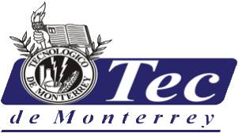

Instituto Tecnológico de Monterrey

Tecnológico de Monterrey is a high education institution that educates students to become responsible citizens who trigger the development of their communities. It promotes humanistic values, an international perspective, and an entrepreneurial culture. It has national and international presence through its 31 campuses distributed in Mexico as well as exchange agreements with over 150 universities throughout the world.
Its variety in education programs, academic excellence and skilled students has made it into a renowned institution. Tecnológico de Monterrey is distinguished for its industrialized and entrepreneurial culture and the areas of study comprise engineering, humanities, administration, business, computer science, medicine, and sustainability.